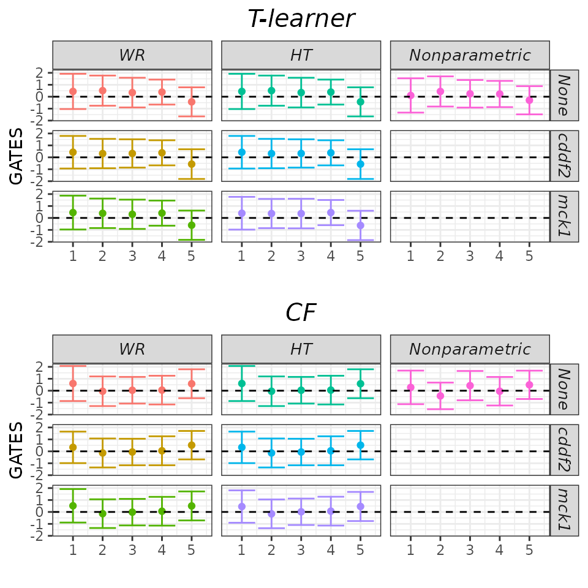
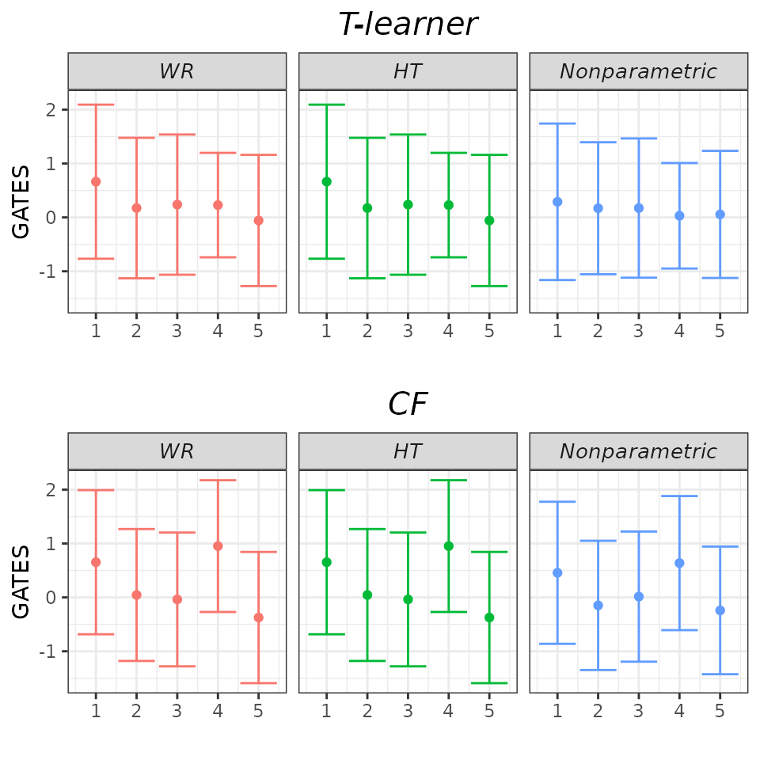
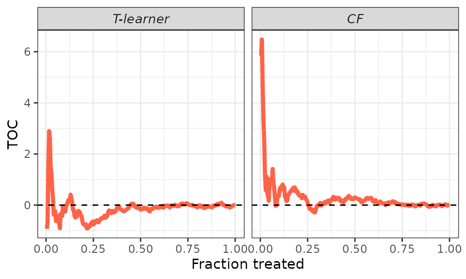
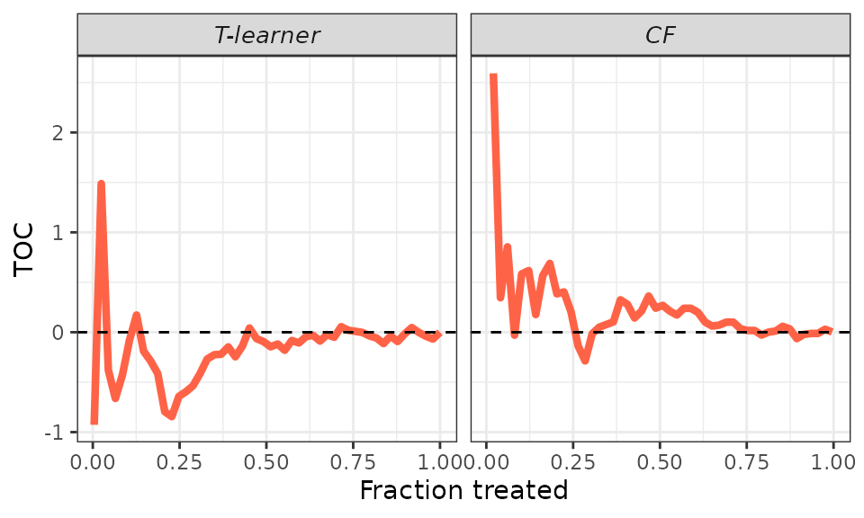
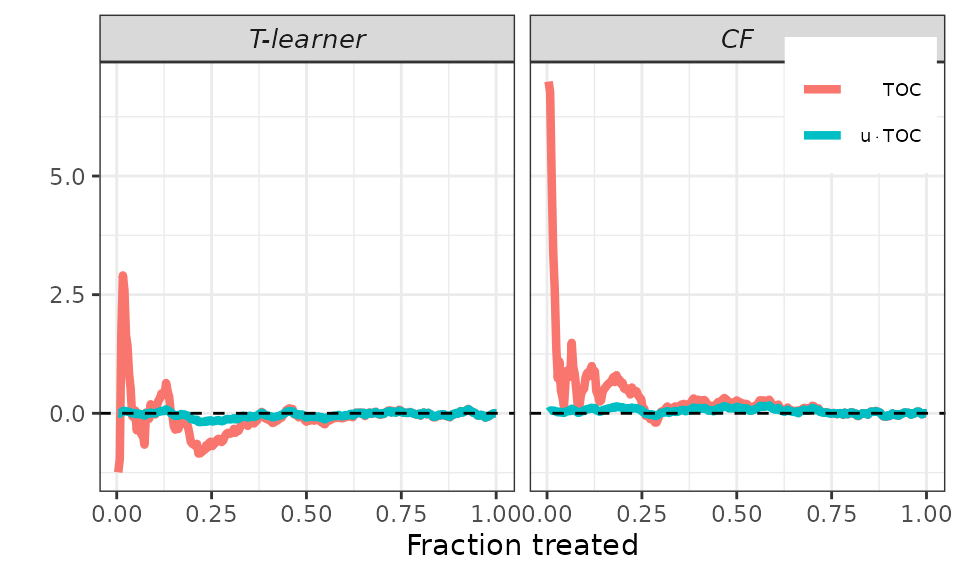
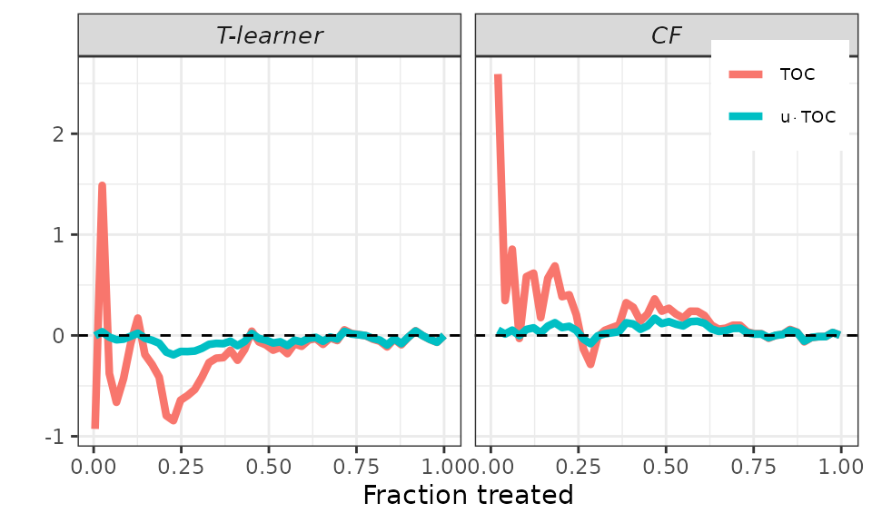
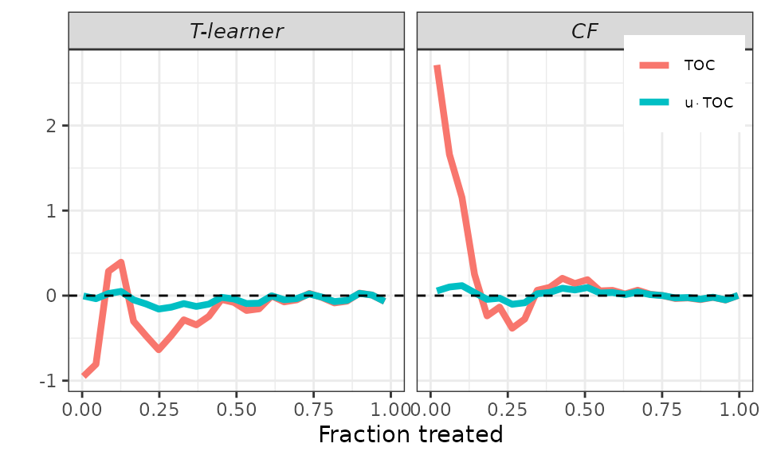

More on Plotting
more-on-plotting.RmdThis article demonstrates how users can experiment with the plotting options to enhance the reporting of their results.
For illustration, we utilize the same Motivating Example as in the short tutorial. The only distinction is that we employ several denoising strategies here.
## Generate data.
set.seed(1986)
n <- 500
k <- 1
X <- matrix(runif(n * k), ncol = k)
colnames(X) <- paste0("x", seq_len(k))
D <- rbinom(n, size = 1, prob = 0.5)
mu0 <- X[, 1]
mu1 <- X[, 1]
Y <- mu0 + D * (mu1 - mu0) + rnorm(n, sd = sqrt(5))
## Sample split.
train_idx <- sample(c(TRUE, FALSE), length(Y), replace = TRUE)
X_tr <- matrix(X[train_idx, ])
X_val <- matrix(X[!train_idx, ])
D_tr <- D[train_idx]
D_val <- D[!train_idx]
Y_tr <- Y[train_idx]
Y_val <- Y[!train_idx]
## CATEs estimation.
# T-learner.
forest_treated <- regression_forest(as.matrix(X_tr[D_tr == 1, ]), Y_tr[D_tr == 1])
forest_control <- regression_forest(as.matrix(X_tr[D_tr == 0, ]), Y_tr[D_tr == 0])
cates_val_t <- predict(forest_treated, X_val)$predictions - predict(forest_control, X_val)$predictions
# Causal forest.
forest <- causal_forest(X_tr, Y_tr, D_tr)
cates_val_cf <- predict(forest, X_val)$predictions
## Define arguments.
cates_val <- list("T-learner" = cates_val_t,
"CF" = cates_val_cf)
strategies <- c("WR", "HT")
denoising <- c("none", "cddf2", "mck1")
pscore_val <- rep(0.5, length(Y_val)) # True propensity scores.
## Call main function.
evaluation <- evaluCATE(Y_tr, Y_val, D_tr, D_val, X_tr, X_val, cates_val, strategies = strategies, denoising = denoising, pscore_val = pscore_val, verbose = FALSE)GATES
As explained in the short
tutorial, we can call the plot method and set the
target argument to GATES to display GATES point estimates
and 95% confidence intervals. However, due to the relatively large
number of models we estimated above, the results may be difficult to
interpret.
## GATES plot - default.
plot(evaluation, target = "GATES")
Fortunately, the results are quite robust across models. Therefore,
it’s reasonable to display only a subset of them and possibly relegate
the remaining ones to an appendix. We can achieve this by using the
which_models argument. Here, we choose to display only
those models that do not utilize any denoising strategy.
## GATES plot - Subset models.
plot(evaluation, target = "GATES",
which_models = c("wr_none", "ht_none", "imai_li"))Finally, we can set the gates_hline argument to
FALSE to omit the horizontal dashed line. While we may not
necessarily need this option here, it’s useful to know that it’s
available.
## GATES plot - drop zero line.
plot(evaluation, target = "GATES",
which_models = c("wr_none", "ht_none", "imai_li"),
gates_hline = FALSE)
RATEs
As explained in the short
tutorial, we can plot the estimated TOC curve by calling the
plot method and setting the target argument to
TOC. However, the displayed curve can be quite jumpy, especially for low
fractions of treated units where the variance of estimation is
larger.
## TOC plot - default.
plot(evaluation, target = "TOC")
We can smooth the curve by adjusting the toc_smoother
argument. Smoothing is accomplished by displaying the TOC for a subset
of units in the validation sample. Specifically, if
toc_smoother equals 2, we display the TOC of every other
unit; if toc_smoother equals 3, we display the TOC of every
third unit, and so forth.
## TOC plot.
# Smooth.
plot(evaluation, target = "TOC",
toc_smoother = 5)
# Smoother.
plot(evaluation, target = "TOC",
toc_smoother = 10)
Finally, remember that the AUTOC coefficient corresponds to the area
under the TOC curve, while the QINI coefficient corresponds to the area
under the curve \(u \times TOC (u;
\hat{\tau})\). To facilitate an immediate graphical comparison of
the two coefficients, it makes sense to plot both the TOC curve and the
new curve together. This is accomplished using the plot
method and setting the target argument to RATE. It’s worth
noting that we can still use the toc_smoother argument to
smooth the curves.
## RATEs plot.
# Default.
plot(evaluation, target = "RATE")
# Smooth.
plot(evaluation, target = "RATE",
toc_smoother = 5)
# Smoother.
plot(evaluation, target = "RATE",
toc_smoother = 10)